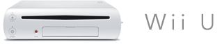
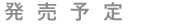
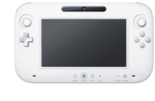
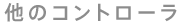
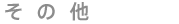

2012年
サイズ 高さ約46mm×幅約172mm×奥行き約268.5mm （突起物含まず）
サイズ 縦約133.5mm×横約228mm×厚さ約23.5mm（突起物含まず）
新コントローラは、6.2インチ、16:9のタッチスクリーンとおなじみのボタンコントローラが合体したものであり、2つのスライドパッドがついている。
この充電式のコントローラには電源ボタン、HOMEボタン、十字ボタン、A/B/X/Yボタン、L/Rボタン、ZL/ZRボタンがついている。また、加速度計、ジャイロセンサー、振動機能、カメラ、マイク、スピーカー、センサー部、タッチペンを備えている。
新コントローラは、6.2インチ、16:9のタッチスクリーンとおなじみのボタンコントローラが合体したものであり、2つのスライドパッドがついている。
この充電式のコントローラには電源ボタン、HOMEボタン、十字ボタン、A/B/X/Yボタン、L/Rボタン、ZL/ZRボタンがついている。また、加速度計、ジャイロセンサー、振動機能、カメラ、マイク、スピーカー、センサー部、タッチペンを備えている。

Wiiリモコン（もしくはWiiリモコンプラス）は最大4本まで同時に接続できる。ヌンチャクやクラシックコントローラ、クラシックコントローラPRO、バランスWiiボードなど、あらゆるWiiコントローラや入力装置に対応する。
新ハード用12cm高密度光ディスクおよび、Wii用12cm光ディスクをプレイ可能なセルフローディング式（自動的にディスクを引き込む方式）のドライブを1つ搭載。
1080p、1080i、720p、480p、480iに対応。 HDMI、コンポーネント、D端子、S端子、コンポジットの各ケーブルに対応。
AVマルチ出力端子からの出力およびHDMI 端子からの PCMリニア 6CH 出力に対応。
内蔵フラッシュメモリに加え、SDメモリーカードや外付けUSBハードディスクドライブを利用することで容量を拡張することができる。
IBM Power®を基にしたマルチコアプロセッサ
AMD Radeon™を基にした高精細度GPU

4つのUSB 2.0端子を備えている。新ハードはWiiのゲームとの後方互換性がある。
※「本体」「新コントローラ」「GPU」の情報を追記しました。（2011.6.17）